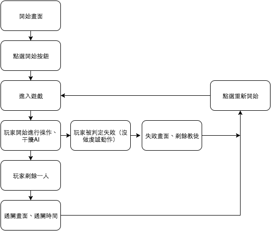
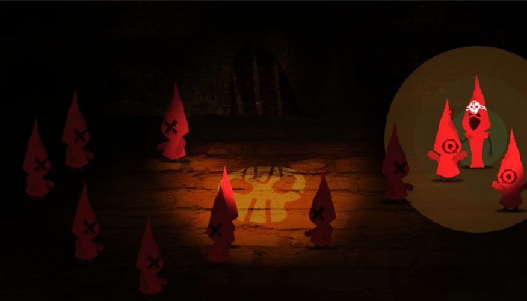

Global Game Jam 2016
作品名稱：After Ritual
團隊名稱：Team I
團隊成員
Ted – Project Manager
Peter – Programmer
Ian – Programmer
小白 – Artist
Eddie – Sound & Music
遊戲完成部分
美術
1.開頭背景
2.遊戲標題
3.開始按鈕
4.教宗（側面）
5.教徒（側面、動作1）
6.場景背景
7.聚光效果-圓形
程式
1.NPC AI 行為（移動、進入判定時動作）
2.角色控制（移動、特定動作）
3.教宗移動（圓形移動）
4.教宗視線（圓形可視範圍）（兩點距離）
5.教宗視線（錐形可視範圍）（數學演算法）
6.教宗全視線（圓形可視範圍擴大）
7.死亡判定
8.通關條件（場景中剩餘玩家）
9.失敗條件（玩家死亡）
10.重新開始
11.玩家干擾功能（範圍干擾）
音樂音效
1.開頭 BGM
2.主遊戲 BGM
3.死亡 SFX
遊戲流程

Alpha 遊戲畫面
